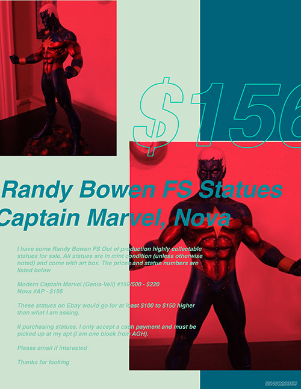
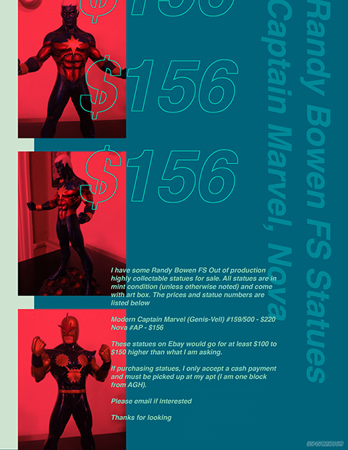
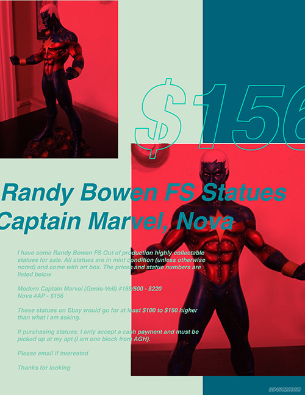
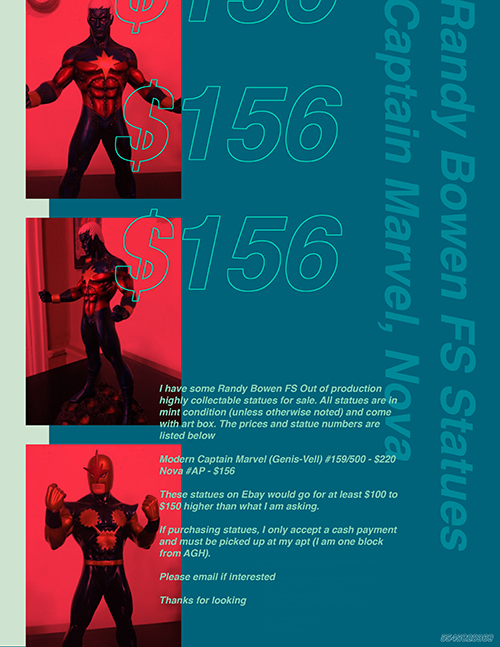

A place based data experience
craigslist: North Side is a visualization of Pittsbugh's North Side. Place based data about the North Side's commercial activities are presented in a series of generative posters, revealing the neighborhood residents's interests and tendencies.

I was interested in seeing if any of Pittsburgh's neighborhoods are laid out in a classic urban model. I chose to focus on the North Side, a neighborhood I am unfamiliar with, and scraped Yelp for the North Side's business and points of interests.
I began visualizing businesses by creating Voronoi diagrams to roughly define each business's "activity space." The diagrams didn't reveal any particularly interesting pattern; most commerce was concentrated along the shoreline and a few points of interest were located farther inland. However, I began to wonder how those who lived farther inland might conduct their commerical activities.

I decided to explore the informal economies of the North Side and scraped craigslist for all the things that residents were selling. A lot can be learned from the things that people own. I created a catalog of posters to present the items in a more engaging manner and have viewers experience North Side through a different medium.

After scraping craigslist, I reduced each posting into the title or item being sold, the type of item, and a keyword from the title, which guided the limits of each poster. Layout was randomly selected from one of three templates, but copy and imagery were from the individual posts themselves. The typeface was based upon the category of item, and the color scheme was drawn from a Colourlovers query based on the keyword. The data collected created rules and limits for the posters themselves. The result is a visualization Pittsburgh's North Side through the items it's residents were selling.
 
 < back
< back